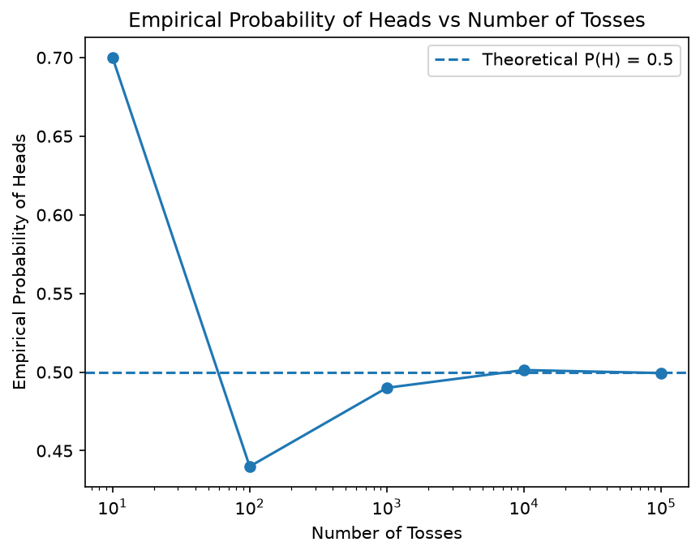
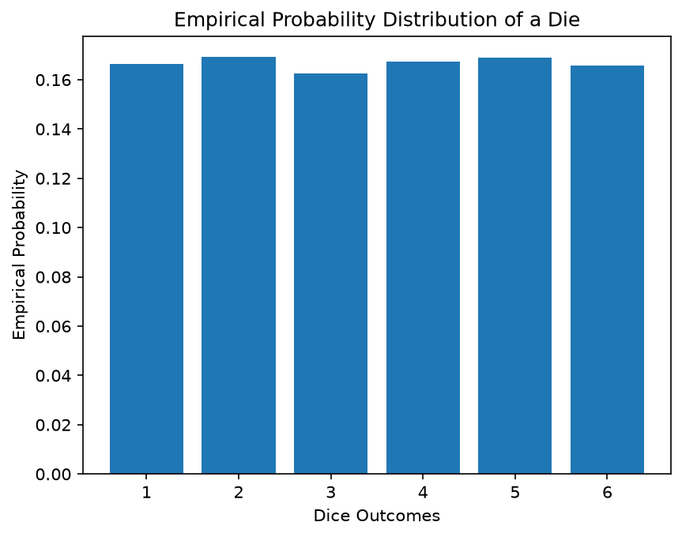
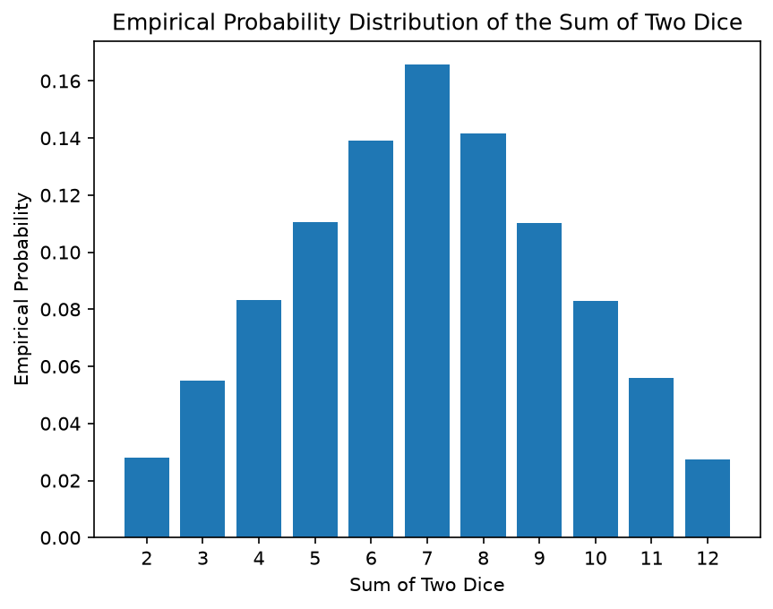

Practical 1: Simulation of Random Experiments
Coin Toss & Dice Roll Simulations, Law of Large Numbers
Question 1: Coin Toss Simulation A fair coin is tossed 100 times. Simulate 100 coin tosses using Python. Count the number of Heads and Tails. Calculate the empirical probability of obtaining a Head. Calculate the empirical probability of obtaining a Tail. Compare the empirical probabilities with the theoretical probabilities: P(H) = 0.5,P(T) = 0.5
import numpy as np
np.random.seed(42)
# Simulate 100 coin tosses
tosses = np.random.choice(['Head', 'Tail'], size=100)
# Count Heads and Tails
heads = np.sum(tosses == 'Head')
tails = np.sum(tosses == 'Tail')
# Calculate empirical probabilities
prob_heads = heads / len(tosses)
prob_tails = tails / len(tosses)
# Print results
print('Heads:', heads)
print('Tails:', tails)
# Print probabilities
print('Probability of Heads:', prob_heads)
print('Probability of Tails:', prob_tails)
# Print theoretical probabilities
print('Theoretical probability of Head:', 0.5)
print('Theoretical probability of Tail:', 0.5)Heads: 44
Tails: 56
Probability of Heads: 0.44
Probability of Tails: 0.56
Theoretical probability of Head: 0.5
Theoretical probability of Tail: 0.5Repeat the coin-toss experiment for: n=10,100,1000,10000,100000Calculate the empirical probability of Heads for each sample size. Plot the empirical probability of Heads against the number of tosses. Add a reference line representing the theoretical probability (P(H) = 0.5).
import numpy as np
import matplotlib.pyplot as plt
# Simulate coin tosses
sample_size = [10, 100, 1000, 10000, 100000]
probability = []
for n in sample_size:
np.random.seed(42)
tosses = np.random.choice(['Head', 'Tail'], size=n)
heads = np.sum(tosses == 'Head')
prob = heads / n
probability.append(prob)
print("Number of tosses:", n)
print("Empirical probability of Head:", prob)
print()
# Plot the graph
plt.plot(sample_size, probability, marker='o')
# Theoretical probability
plt.axhline(y=0.5, linestyle='--', label='Theoretical P(H) = 0.5')
plt.xlabel("Number of Tosses")
plt.ylabel("Empirical Probability of Heads")
plt.title("Empirical Probability of Heads vs Number of Tosses")
plt.xscale('log')
plt.legend()
plt.show()Number of tosses: 10
Empirical probability of Head: 0.7
Number of tosses: 100
Empirical probability of Head: 0.44
Number of tosses: 1000
Empirical probability of Head: 0.49
Number of tosses: 10000
Empirical probability of Head: 0.5013
Number of tosses: 100000
Empirical probability of Head: 0.49937
Question 2: Dice Roll Simulation A fair six-sided die is rolled 10,000 times. Let X denote the outcome of a roll. Estimate the following probabilities: 1. P(X=6) 2. P(X is even) 3. P(X>4) 4. P(X≤3) Compare the empirical probabilities with their theoretical probabilities. Are the empirical and theoretical probabilities exactly equal? Why or why not?
import numpy as np
np.random.seed(42)
# Simulate 10000 dice rolls
rolls = np.random.randint(1, 7, size=10000)
# Calculate the empirical probabilities
p_6 = np.mean(rolls == 6)
p_even = np.mean(rolls % 2 == 0)
p_greater_4 = np.mean(rolls > 4)
p_less_equal_3 = np.mean(rolls <= 3)
# Print the results
print("P(X = 6):", p_6)
print("P(X is even):", p_even)
print("P(X > 4):", p_greater_4)
print("P(X <= 3):", p_less_equal_3)P(X = 6): 0.1657
P(X is even): 0.5021
P(X > 4): 0.3346
P(X <= 3): 0.4982NO, the theoretical and empirical probabilities are not exactly same they differ as the trial perform is low so the probabilities slightly differ. Simulate 10,000 rolls of a fair six-sided die. 1. Calculate the frequency of each outcome 1, 2,...,6. 2. Calculate the empirical probability of each outcome. 3. Display the results in a table. 4. Plot the empirical probability distribution using a bar graph. Questions: a. Are all six outcomes approximately equally likely? b. What should the probability of each outcome approach as the number of rolls becomes very large?
import numpy as np
import matplotlib.pyplot as plt
np.random.seed(42)
# Simulate 10000 dice rolls
rolls = np.random.randint(1, 7, size=10000)
# Calculate frequency and probabilities
values, frequency = np.unique(rolls, return_counts=True)
probabilities = frequency / len(rolls)
# Print the results
print("Face\tFrequency\tProbability")
for value, frequency, probability in zip(values, frequency, probabilities):
print(f"{value}\t{frequency}\t\t{probability:.4f}")
# Plot the bar graph
plt.bar(values, probabilities)
plt.xlabel("Dice Outcomes")
plt.ylabel("Empirical Probability")
plt.title("Empirical Probability Distribution of a Die")
plt.xticks(values)
plt.show()Face Frequency Probability
1 1665 0.1665
2 1692 0.1692
3 1625 0.1625
4 1672 0.1672
5 1689 0.1689
6 1657 0.1657
import numpy as np
n = 10000
np.random.seed(42)
# Simulate rolling two dice
die1 = np.random.randint(1, 7, size=n)
die2 = np.random.randint(1, 7, size=n)
# Calculate the sum of two dice
total = die1 + die2
# Calculate empirical probabilities
p_sum_2 = np.mean(total == 2)
p_sum_7 = np.mean(total == 7)
p_sum_12 = np.mean(total == 12)
p_greater_9 = np.mean(total > 9)
# Print the results
print("P(S = 2):", p_sum_2)
print("P(S = 7):", p_sum_7)
print("P(S = 12):", p_sum_12)
print("P(S > 9):", p_greater_9)P(S = 2): 0.0273
P(S = 7): 0.1616
P(S = 12): 0.0275
P(S > 9): 0.1689Using a simulation of 100,000 rolls of two dice: Calculate the frequency of each possible sum: 2,3, ... ,12 Calculate the empirical probability of each sum. Plot the empirical probability distribution. Questions: a. Which sum has the highest probability? b. Which sums have the lowest probability? c. Why is the probability of obtaining 7 higher than the probability of obtaining 2? d. Does the simulated distribution resemble the theoretical distribution?
import numpy as np
import matplotlib.pyplot as plt
n = 100000
np.random.seed(42)
# Simulate rolling two dice
die1 = np.random.randint(1, 7, size=n)
die2 = np.random.randint(1, 7, size=n)
# Calculate the sum of two dice
total = die1 + die2
# Calculate frequency and probabilities
sums, frequency = np.unique(total, return_counts=True)
probabilities = frequency / len(total)
# Print the results
print("Sum\tFrequency\tProbability")
for s, frequency, probability in zip(sums, frequency, probabilities):
print(f"{s}\t{frequency}\t\t{probability:.4f}")
# Plot the bar graph
plt.bar(sums, probabilities)
plt.xlabel("Sum of Two Dice")
plt.ylabel("Empirical Probability")
plt.title("Empirical Probability Distribution of the Sum of Two Dice")
plt.xticks(range(2, 13))
plt.show()Sum Frequency Probability
2 2798 0.0280
3 5501 0.0550
4 8328 0.0833
5 11041 0.1104
6 13924 0.1392
7 16569 0.1657
8 14172 0.1417
9 11032 0.1103
10 8299 0.0830
11 5602 0.0560
12 2734 0.0273